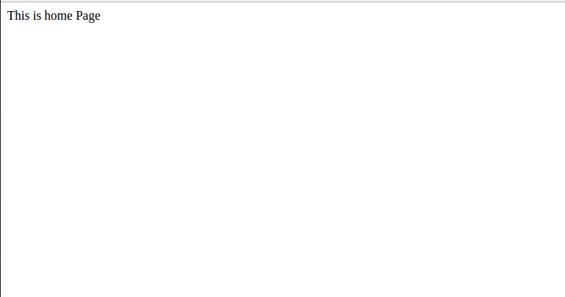
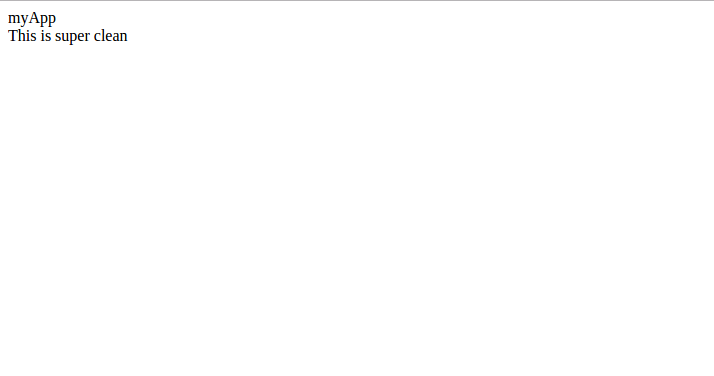

Other methods (PUT,DELETE...)
Of course you can use the other methods. For instance, if you have a PUT request, it will call PUT_actionName.
npm install fooll fooll-clifooll -a myAppA new folder containing your app is now created.
cd myAppnpm install myApp
|_ public
|_ app.js
|_ package.jsonfooll -M homeA module called home has been generated in app_modules, the directory now looks like this:
myApp
|_ app_modules
|_ home
|_ client
|_ views
|_ index.js
|_ public
|_ app.js
|_ package.jsonres.end('This is home Page'); to GET_root method.So the file will look like:
const Foola = require('foola');
class Home extends Foola {
GET_root(req, res) {
res.end('This is home Page');
}
}
module.exports = Home;node app.jsNow, if you visite localhost:3000/home/, you'll get something like this:

Create the file app_modules/home/views/index.pug with this content:html
head
title My App Fooll
body
#header myApp
#content This is super cleanAnd replace the code in app_modules/home/index.js by this:
const Foola = require('foola');
class Home extends Foola {
GET_root(req, res) {
res.render(this.views.index);
}
}
module.exports = Home;Now, if you visite localhost:3000/home/, you'll get something like this:

Let's make some style to this page.
Create a file style.css in /public/ with this content:
#header {
background-color: #4588ce;
color: #FFF;
padding: 20px;
font-size: 30px;
}
#content {
padding: 20px;
color: #282828;
}And add this line of code to head tag in app_modules/home/views/index.pug:
link(rel="stylesheet", href="/file/style.css")Now, if you visite localhost:3000/home/, you'll get something like this:

Now, We want to call some javascript that's specific to our home module.
So we create a file app_modules/home/client/main.js in /public/ with this content:
document.getElementById('content').innerHTML += 'This text is added by Javascript';And add this line of code to the end of body tag in app_modules/home/views/index.pug:
script(src="/home/file/main.js")Now, if you visite localhost:3000/home/, you'll get something like this:

In our case we should access home from localhost:3000 instead of localhost:3000/home/.
Fooll makes it easy to achieve that. Just set aliases options to server in /app.js:
const Fooll = require('fooll');
var server = new Fooll({
aliases: {
'': 'home'
}
});
server.listen();Now, from localhost:3000, you can access what we used to get from localhost:3000/home/. Try it!
But before we start, let's make a new module called login. by running:
fooll -M loginNow create a file app_modules/login/views/index.pug with this content:
html
head
title My App Fooll: Login
body
#header myApp
#content
form(method="post",action="/login/signin")
input(name="username")
input(name="password",type="password")
button SubmitAnd render the view when the module's root is resquested. So make the file app_modules/login/index.js look like this:
const Foola = require('foola');
class Login extends Foola {
GET_root(req, res) {
res.render(this.views.index);
}
}
module.exports = Login;Now, if localhost:3000/login/ you'll find the form that sends a POST request to /login/signin.
/login/signin means that the request will call the function signin in the named login module.
But wait! it's a a POST request, so it will look for POST_signin in login module.
So let's write this function. Add this code to Login class:
POST_signin(req, res) {
console.log(req.body);
res.end('the form data has been received');
}You should know how to try it! So don't hesitate to do.
Of course you can use the other methods. For instance, if you have a PUT request, it will call PUT_actionName.
Now, we'll discover another great feature in FoollJS. We'll make a module that extends from another one.
Imagine we want to make a module that adds a register function to login module, but without changing it.
We'll make a new module called authentication that extends from login. Run:
fooll -M authentication
And write this code in its index.js:
const Login = require('./../login');
class Authentication extends Login {
GET_register(req, res) {
res.render(this.views.register);
}
POST_register(req, res) {
console.log(req.body);
res.end('the register form data has been received');
}
}
module.exports = Authentication;You should know that views are not inherited. So you have to create /authentication/views/index.pug which sends the login form to /authentication/signin.
And create /authentication/views/register.pug that contains the register form with POST as method and /authentication/register as action.
FoollJS supports ExpressJS middlewares. But FoollJS has its proper way to implement them.
While in ExpressJS you write app.use(middleware), in FoollJS you write server.addHook(middleware).
We'll take the example of express-session middleware:
const session = require('express-session');
app.use(session({
secret: 'keyboard cat',
resave: false,
saveUninitialized: true,
cookie: { secure: true }
}))const session = require('express-session');
server.addHook(session({
secret: 'keyboard cat',
resave: false,
saveUninitialized: true,
cookie: { secure: true }
}))So app.js will look this:
const Fooll = require('fooll');
const session = require('express-session');
var server = new Fooll({
aliases: {
'': 'home'
}
});
server.addHook(session({
secret: 'keyboard cat',
resave: false,
saveUninitialized: true,
cookie: { secure: true }
}))
server.listen();Now that you have learned the basics of FoollJS, we recommend you to check the documentations here, which contains all that you need to know about FoollJS.